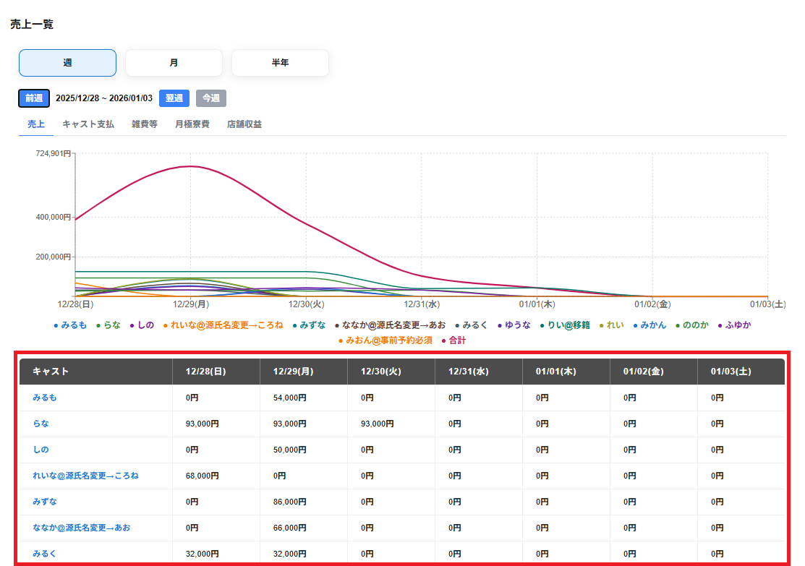

売上一覧の画面下部にはキャスト名ごとに選択のタブの項目が一覧で表示されます。
選択のタブで選択した項目に合わせて一覧が表示されます。
一覧の最下部の行には合計の金額が表示されます。
最左部の列にはキャスト名が表示されます。
最上部の行には期間が表示されます。
※週毎の表示の場合は選択した週の日毎の売上一覧が表示されます。
※月毎の表示の場合は選択した月の週毎の売上一覧が表示されます。
※半年毎の表示の場合は選択した半年の月毎の売上一覧が表示されます。
キャストの行を選択することでキャスト別のアナリティクスを確認することができます。
